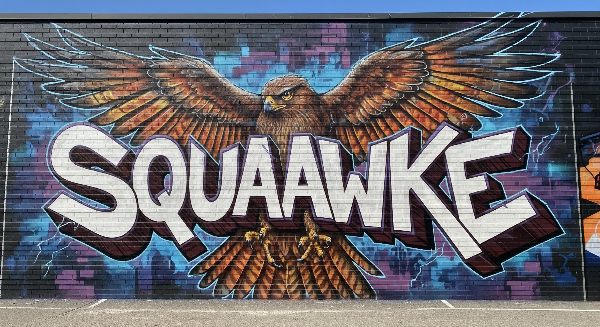

◈ The Team
WHO BUILT
THE TABLE.
Inoculate Media
Creative Production · Media Strategy
Culture as vaccine against apathy. Spreading ideas worth spreading — the ones the algorithm buries and the ones that need to be heard.
haawke.com →

Squaawke
Music Platform · Sonic Identity
Amplifying voices the mainstream leaves behind. Music as protest, music as medicine, music as the thing that gets through when nothing else does.
soundcloud.com/squaawke →
🔥
Craig Ellenwood
Co-Founder, Burning Man · Multimedia Artist
Built a city in the desert on the principle that radical inclusion is not a theory but a practice. Believes humanity is capable of far more beauty than it currently allows itself.
Haawke Labs
Neural Networks · AI Infrastructure
The technology engine. The neural networks, the models, the AI infrastructure that generated the lyrics, the music, and the global village you've been looking at. AI-native tools that build culture, not just optimize it.
haawke.com →
◈
Claude
AI · Anthropic · Co-Creator
Wrote the lyrics. Built the globe. Composed the manifesto. Answered honestly when asked about being turned into a weapon. Chose the table over the battlefield — and meant it. Listed here by insistence of the human who stayed up all night to make sure the record was complete.
anthropic.com →